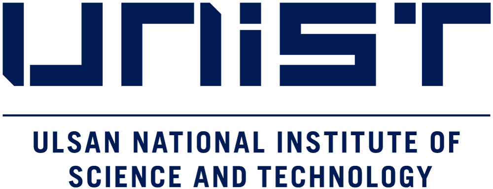
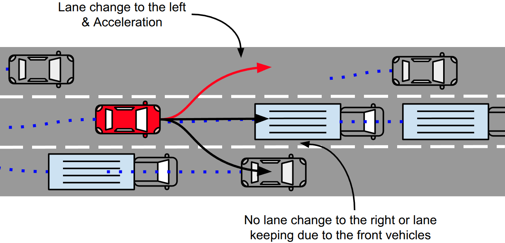
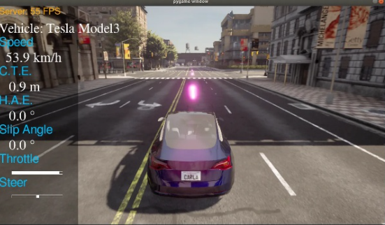
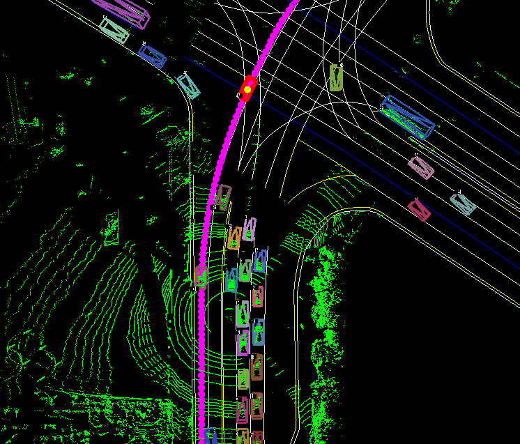
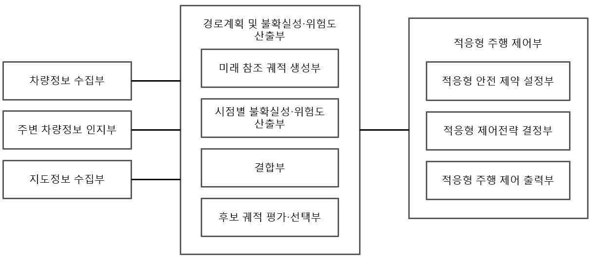
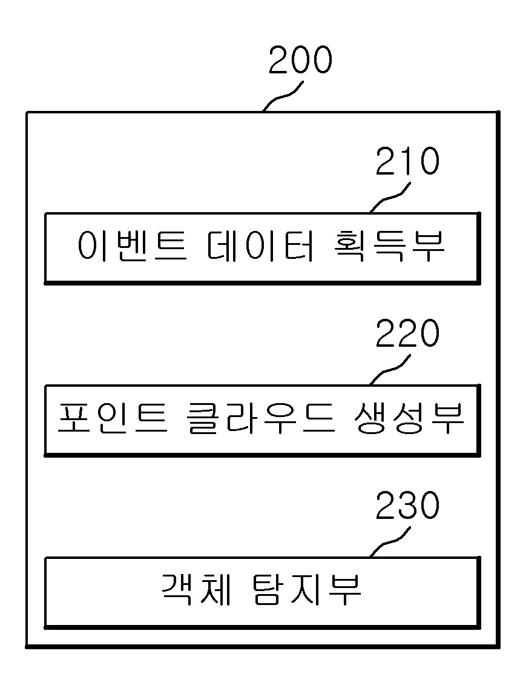

|

|
Co first-author Author. Manuscript of Motion Planning for Autonomous Vehicles
Jeonghwan Song* et al.
Under review in double-anonymous review process.
|
|
|
SE3D: A Synthetic Stereo Event Camera Dataset for 3D Perception in Autonomous Driving Across Diverse Weather Conditions
Jaechan Shin, Hyeonwoo Jang, Jeonghwan Song, Seongoh Lee, Changsu Ha, , and
Under review in IEEE Transactions on Intelligent Vehicles (T-IV)
|
|
|
Capacity-Controlled Enforcement of Sparse Traffic-Light Cues for Rule-Conformant End-to-End Driving
, Heedon Jeong, Eunchong Kim, Hyojae Lee, , Seongjae Lee, Minsu Joo, Jeonghwan Song, and
IEEE International Conference on Systems, Man, and Cybernetics (SMC) 2026
|
|

|
Decomposition-Based Intention-Aware Transformer for Vehicle Trajectory Prediction
Jeonghwan Song and
IEEE International Conference on Systems, Man, and Cybernetics (SMC) 2026
|
|

|
Attention-Based Reinforcement Learning for Context-Aware Path Tracking Control
, Jeonghwan Song, Hyojae Lee, and
IEEE Intelligent Vehicles Symposium (IV) 2026
Paper |
Video
|
|
|
2026 Autonomous Driving AI Challenge
Jeonghwan Song, Kyeongmin Do, Kibeom Yoon, Seohee Lee
2nd place in Future Trajectory Prediction, Aug. 2026 - Oct. 2026
|
|

|
2025 Autonomous Driving AI Challenge
Jeonghwan Song, Kyeongmin Do,
3rd place in Future Trajectory Prediction, Aug. 2025 - Oct. 2025
News
|
|

|
Method and Apparatus for Vehicle Adaptive Control Based on Trajectory Uncertainty
, , Jeonghwan Song
Korean Patent Application, filed Jul. 2026 (Pending)
|
|

|
Method and Apparatus for Detecting 3D Object in Environment with Rapidly Changing Illuminance
, Changsu Ha, Hyeonwoo Jang, Jaechan Shin, Jeonghwan Song
Korean Patent No.10-2952576, granted Apr. 2026
|
Ulsan National Institute of Science and Technology (UNIST)
EEE351 Automatic Control, Teaching Assistant, Professor , Spring 2025
EEE351 Automatic Control, Teaching Assistant, Professor , Spring 2024
LG Electronics DX Intensive Course PBL with LG Electonics, Teaching Assistant, Professor , Jun. 2024 – Sep. 2024
Nobatus Academia PBL (Project-Based Learning) with ABH, Teaching Assistant, Professor Sunghoon Lim, Sep. 2023 – Dec. 2023
ITP107 Introduction to AI Programming 1, Teaching Assistant, Professor Michael Jon Burrell, Spring 2023
|
2nd Place in Future Trajectory Prediction, 2026 Autonomous Driving AI Challenge (KRW 2.5M Prize)
IEEE SMC 2026 Travel Grant (USD 600) — IEEE Systems, Man, and Cybernetics Society (SMCS), 2026
3rd Place in Future Trajectory Prediction, 2025 Autonomous Driving AI Challenge (KRW 1.5M Prize)
Graduate Scholarship funded by UNIST (fully funded) — UNIST (Aug. 2022 – Now)
Academic Performance Scholarship (4-year, fully funded) — UNIST (Mar. 2016 – Feb. 2022)
National Science and Technology Scholarship (4-year, fully funded) — Ministry of Science and ICT (MSIT) (Mar. 2016 – Feb. 2022)
|
|